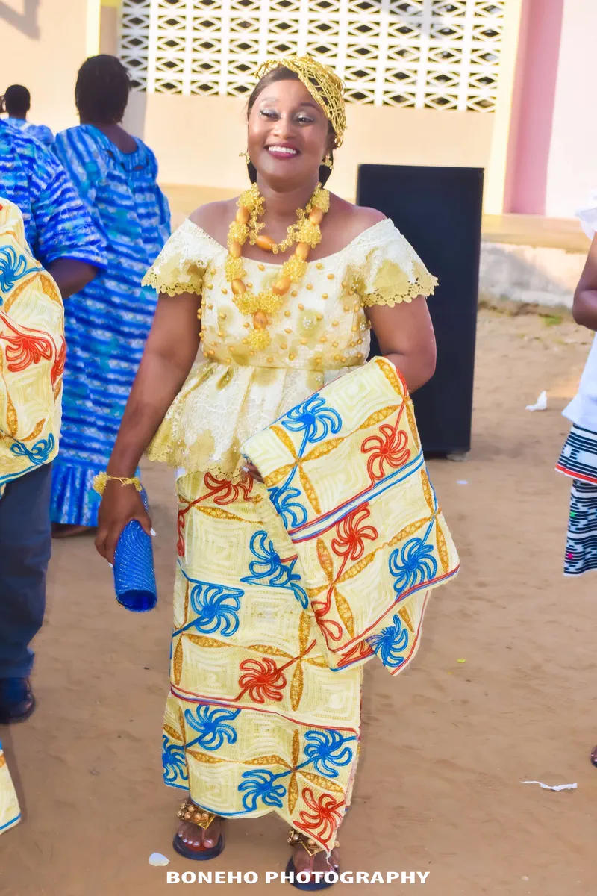
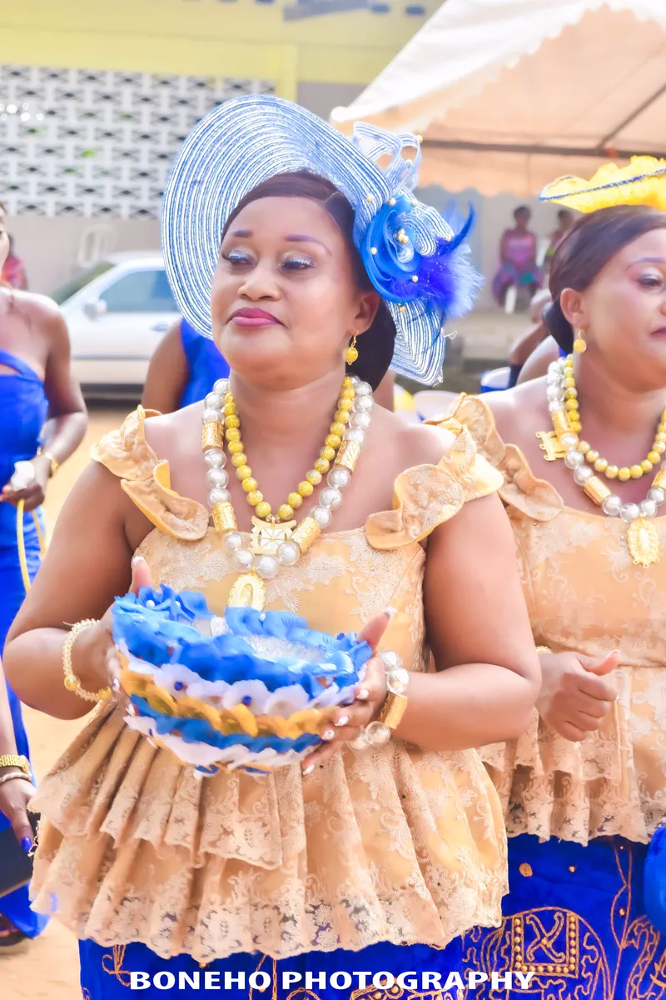

Reportages Mariage
Florent — Une célébration, une histoire

Introduction
Comme un grand frère
J'ai rencontré Florent dans une église que je fréquentais en Côte d'Ivoire. J'y étais photographe lors des événements et des cérémonies.
Avec le temps, Florent est devenu comme un grand frère pour moi. Je le respecte pour son sérieux et pour son sens des responsabilités.
Lors de son mariage traditionnel, j'ai voulu mettre ce que je sais faire au service de cette journée particulière. Voici ce que j'en ai gardé : vingt-cinq photographies.
Chapitre 1 sur 6
Les mariés
Au milieu de la foule, des danses et des discours, il y a d'abord eux deux.
Florent en bleu roi, son épouse en blanc. Je les ai regardés simplement, côte à côte, tels qu'ils étaient ce jour-là.
Le costume bleu roi, la pochette dorée, le regard droit vers l'objectif.


Certains instants ne demandent rien au photographe, sinon d'être là au bon moment.
Chapitre 2 sur 6
Les tenues
Au fil de la journée, Florent et son épouse ont porté plusieurs tenues.
Pagnes tissés et colliers d'or, blanc rehaussé de bleu, dentelle dorée : chacune avait sa lumière, et je voulais les garder toutes.

Le blanc, le bleu, et la canne.


Chapitre 3 sur 6
Traditions et couleurs
Le jaune, le bleu, l'or.
Je n'ai rien eu à ajouter : les couleurs étaient déjà là, sur les tissus, les coiffes et les éventails.


Les tissus, les colliers, les coiffes : chaque détail reprenait les couleurs de la fête.
Chapitre 4 sur 6
Les invités et les danses
Une fête se lit aussi sur ceux qui l'entourent.
On a dansé, on a ri, on a posé pour moi entre deux pas.

Un éclat de rire, saisi au milieu de la danse.
Et Florent aussi a dansé.
Chapitre 5 sur 6
Les voix
Une cérémonie, ce sont aussi des voix.
Le pasteur pour bénir les mariés, les maîtres de cérémonie pour animer la fête, le protocole pour que tout s'enchaîne.

Chapitre 6 sur 6
Le gâteau
Pour finir, le gâteau : haut, blanc et bleu, éclairé d'étincelles.
Autour de lui, tout le monde s'est rapproché.